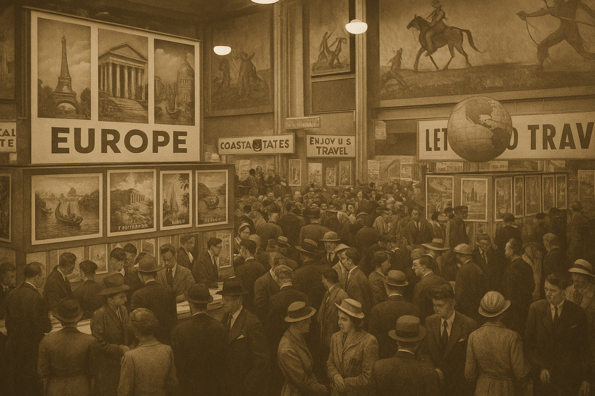

Nuestra Historia Actualizada
La Feria de Viajes de Euskadi – Euskal Bidaiako Feria nacio en el año 1920 con el objetivo de promover el turismo y la cultura del Pais Vasco – Euskal Herria. Desde que se creo esta feria, numerosos eventos se han organizado a lo largo de los años y se ha consolidado como una de las principales ferias de viajes y eventos culturales de la región.
A lo largo de más de 100 años desde su creación, la feria ha crecido en numeros de expositores, visitantes de todo el mundo y convirtiendose en un punto de encuentro para profesionales del sector turistico.
Hitos importantes
- 1920 – Primera edición con 50 expositores locales.
- 1950 – Inclusión de expositores internacionales.
- 2000 – Récord de visitantes: más de 100.000 personas.
- 2020 – Feria virtual debido a la pandemia.
- 2023 – Regreso al formato presencial con innovaciones tecnológicas.
- 2024 – Lanzamiento del proyecto "Gran Tour Euskadi Basque Country"
- 2025 – Consolidación de Euskadi como referente en turosmo sostenible "Euskadi Verde".